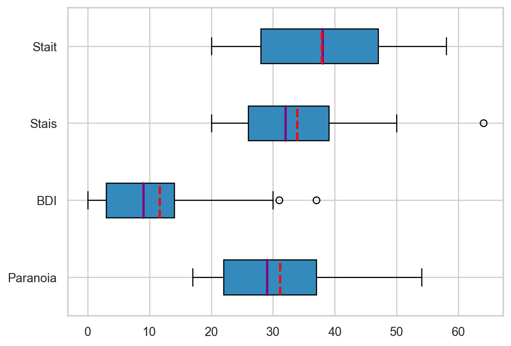
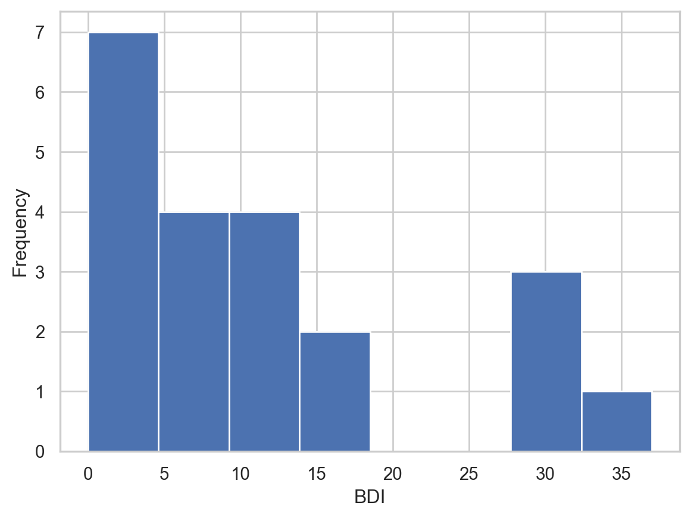
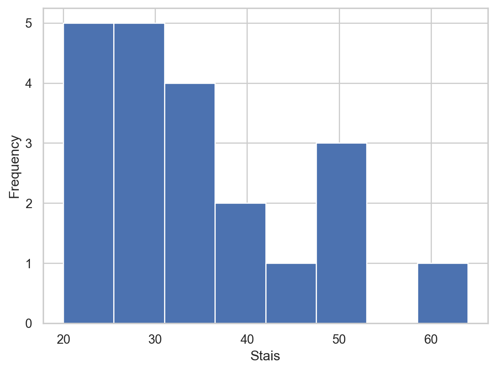
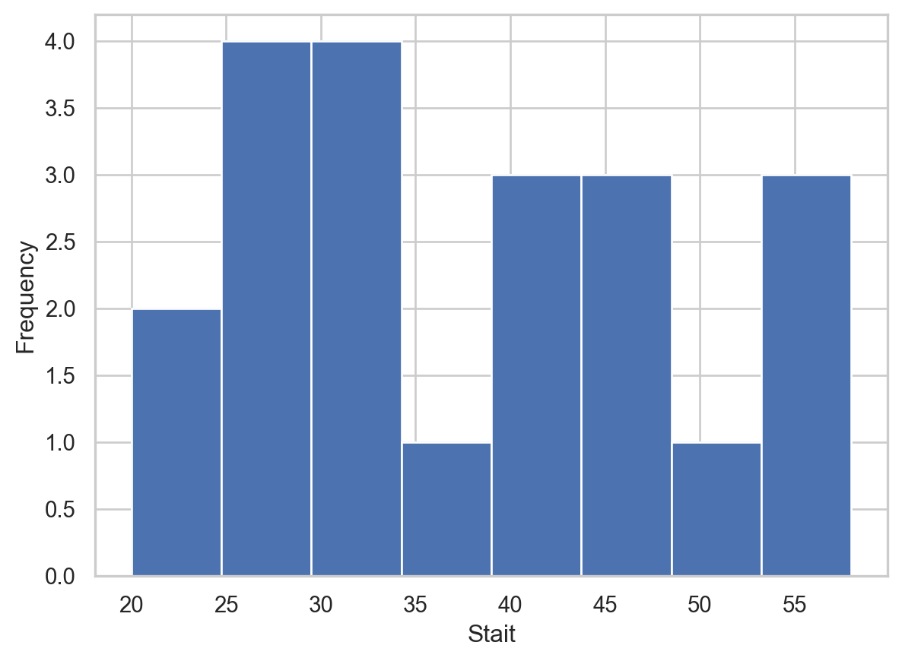
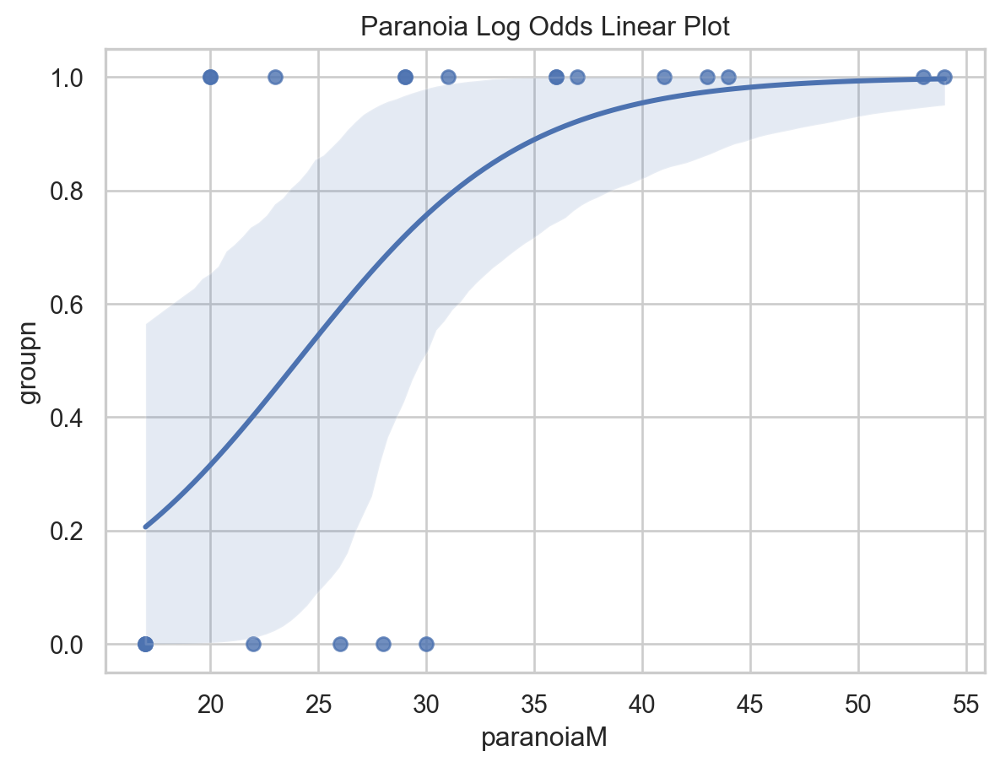
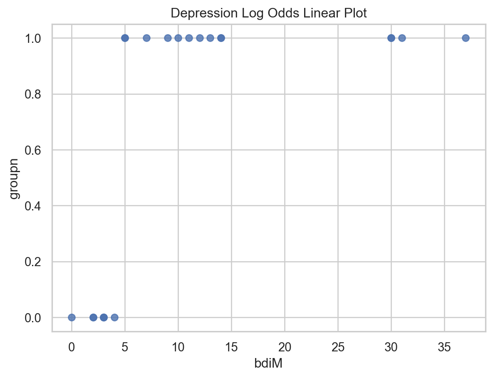
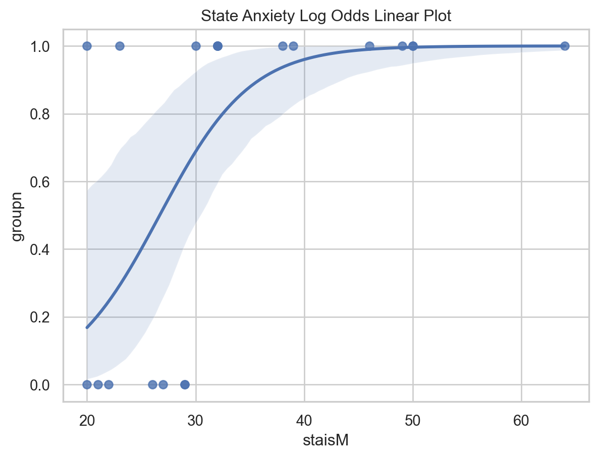
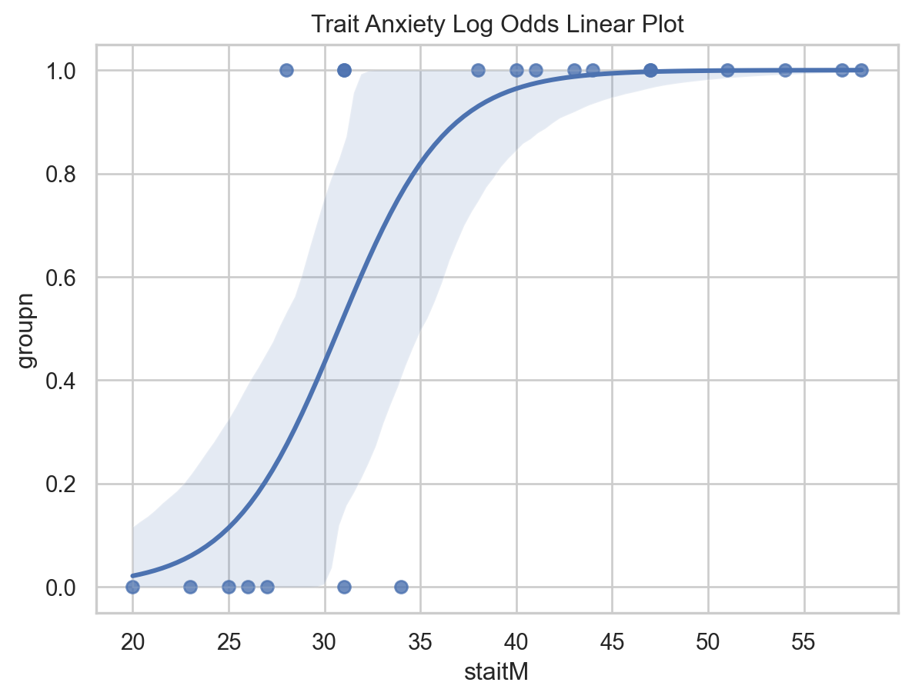

import math
import statistics
import numpy as np
import pandas as pd
import scipy.stats
import matplotlib.pyplot as plt
plt.style.use('ggplot')
import statsmodels.formula.api as smf
import seaborn as sns
sns.set(style="white")
sns.set(style="whitegrid", color_codes=True)Analysis of Factors Data
df = pd.read_csv(r"../Data/FactorsData/factors.csv")Descriptive Statistics
# more complicated code to get descriptive stats
# summary_paranoia = df.groupby("run", as_index=False)["paranoiaM"].agg(["count","min","max","mean","std"])
# print("Summary for paranoia\n",summary_paranoia)
# print()
# print()
#
# summary_bdi = df.groupby("run", as_index=False)["bdiM"].agg(["count","min","max","mean","std"])
# print("Summary for bdi\n",summary_bdi)
# print()
# print()
#
# summary_stais = df.groupby("run", as_index=False)["staisM"].agg(["count","min","max","mean","std"])
# print("Summary for stais\n",summary_stais)
# print()
# print()
#
# summary_stait = df.groupby("run", as_index=False)["staitM"].agg(["count","min","max","mean","std"])
# print("Summary for stais\n",summary_stait)
# print()
# print()# simpler code to get descriptive statistics
result = df.iloc[:,df.columns.get_loc('paranoiaM'):df.columns.get_loc('staitM')+1].describe()
print(result) paranoiaM bdiM staisM staitM
count 21.000000 21.000000 21.000000 21.000000
mean 31.095238 11.666667 33.857143 37.904762
std 11.246798 11.019679 11.921769 11.549479
min 17.000000 0.000000 20.000000 20.000000
25% 22.000000 3.000000 26.000000 28.000000
50% 29.000000 9.000000 32.000000 38.000000
75% 37.000000 14.000000 39.000000 47.000000
max 54.000000 37.000000 64.000000 58.000000Condition Checking
Distribution of Data
We will take a look at the distribution for the correlation tests and to better understand the data. We don’t need to have normal distributions for logistic regressions.
fig, ax = plt.subplots()
ax.boxplot((df.paranoiaM,df.bdiM,df.staisM,df.staitM),
vert=False, showmeans=True, meanline=True,
labels=('Paranoia', 'BDI', 'Stais', 'Stait'),
patch_artist=True,
medianprops={'linewidth': 2, 'color': 'purple'},
meanprops={'linewidth': 2, 'color': 'red'})
plt.show()
There are potential outliers that may affect our models later. However, they are not too far away so I will keep them.
plt.clf()
fig, ax = plt.subplots()
ax.hist(df.paranoiaM, 5, cumulative=False)
ax.set_xlabel('Paranoia')
ax.set_ylabel('Frequency')
plt.show()<Figure size 672x480 with 0 Axes>
Paranoia has a right skewed distribution.
plt.clf()
fig, ax = plt.subplots()
ax.hist(df.bdiM, 8, cumulative=False)
ax.set_xlabel('BDI')
ax.set_ylabel('Frequency')
plt.show()<Figure size 672x480 with 0 Axes>
BDI has a right skewed distribution.
plt.clf()
fig, ax = plt.subplots()
ax.hist(df.staisM, 8, cumulative=False)
ax.set_xlabel('Stais')
ax.set_ylabel('Frequency')
plt.show()<Figure size 672x480 with 0 Axes>
Stais has a right skewed distribution.
plt.clf()
fig, ax = plt.subplots()
ax.hist(df.staitM, 8, cumulative=False)
ax.set_xlabel('Stait')
ax.set_ylabel('Frequency')
plt.show()<Figure size 672x480 with 0 Axes>
Stait has a non-normal distribution.
None of the distributions are normal.
Correlation Among Factors
Since the distributions are non-normal, we use the non-parametric test, Spearman’s Rank Correlation Test.
corr = df.iloc[:,df.columns.get_loc('paranoiaM'):df.columns.get_loc('staitM')+1].corr(method='spearman')
print("Spearman's Correlation Matrix")
print(corr)Spearman's Correlation Matrix
paranoiaM bdiM staisM staitM
paranoiaM 1.000000 0.694290 0.703269 0.810626
bdiM 0.694290 1.000000 0.637137 0.830454
staisM 0.703269 0.637137 1.000000 0.805032
staitM 0.810626 0.830454 0.805032 1.000000As seen in the correlation matrix, all factors are very strongly correlated with each other. Therefore, we will create logistic models for each individual factor later.
Linearity of Log Odds
# no longer converting groupn to (binary) categorical variable
#df['groupn'] = df['groupn'].astype('category')
df['gendern'] = df['gendern'].astype('category')
print(df.dtypes)id float64
run float64
groupn float64
age float64
gendern category
matchid float64
paranoiaM float64
bdiM float64
staisM float64
staitM float64
dtype: objectplt.clf()
paranoia_check = sns.regplot(x='paranoiaM', y='groupn', data=df, logistic=True).set_title("Paranoia Log Odds Linear Plot")
paranoia_check.figure.savefig("./LogOddsPlots/sparanoia_log_lin.png")
Paranoia passes the linearity of log odds check!
plt.clf()
bdi_check = sns.regplot(x= 'bdiM', y= 'groupn', data= df, logistic= True).set_title("Depression Log Odds Linear Plot")
bdi_check.figure.savefig("./LogOddsPlots/bdi_log_lin.png")/Library/Frameworks/Python.framework/Versions/3.11/lib/python3.11/site-packages/numpy/lib/nanfunctions.py:1577: RuntimeWarning:
All-NaN slice encountered

Somehow there is some error here but I’m not sure why. From what we can see, I believe that this should be fine.
plt.clf()
stais_check = sns.regplot(x= 'staisM', y= 'groupn', data= df, logistic= True).set_title("State Anxiety Log Odds Linear Plot")
stais_check.figure.savefig("./LogOddsPlots/stais_log_lin.png")
Stais passes the linearity of log odds check!
plt.clf()
stait_check = sns.regplot(x= 'staitM', y= 'groupn', data= df, logistic= True).set_title("Trait Anxiety Log Odds Linear Plot")
stait_check.figure.savefig("./LogOddsPlots/stait_log_lin.png")
Stait passes the linearity of log odds check!
Logistic Regressions
We control for the confounding variable gender.
Paranoia Logistic Model
p_model= smf.logit(formula="groupn~paranoiaM+gendern", data=df).fit()
p_model.summary()Optimization terminated successfully.
Current function value: 0.418050
Iterations 7| Dep. Variable: | groupn | No. Observations: | 21 |
|---|---|---|---|
| Model: | Logit | Df Residuals: | 18 |
| Method: | MLE | Df Model: | 2 |
| Date: | Wed, 26 Apr 2023 | Pseudo R-squ.: | 0.3432 |
| Time: | 13:48:37 | Log-Likelihood: | -8.7790 |
| converged: | True | LL-Null: | -13.367 |
| Covariance Type: | nonrobust | LLR p-value: | 0.01018 |
| coef | std err | z | P>|z| | [0.025 | 0.975] | |
|---|---|---|---|---|---|---|
| Intercept | -4.5291 | 2.470 | -1.834 | 0.067 | -9.369 | 0.311 |
| gendern[T.1.0] | -0.8532 | 1.245 | -0.685 | 0.493 | -3.293 | 1.587 |
| paranoiaM | 0.2058 | 0.100 | 2.067 | 0.039 | 0.011 | 0.401 |